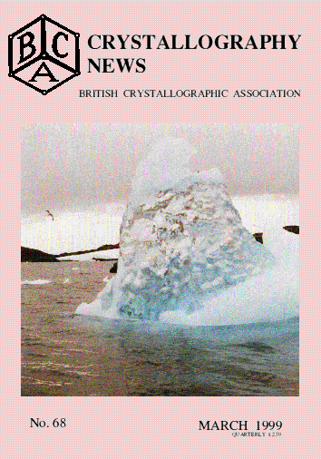

Contents Crystallography News No 68 Mar 99

cover story
FROM THE PRESIDENT
remarks p 2
FROM THE SECRETARY
-
Council Members 1998-1999 p 4 - 5
-
Current Chairmen of Groups p 2
- Notice of BCA AGM in 1999 3
FROM THE TREASURER
Accounts for St.Andrews meeting p 6
FROM THE ADMINISTRATIVE SECRETARY
- BCA membership Forms for 1999 and instructions p60
BCA Bursaries awarded in 1998 p 7
BCA Bursaries in 1999 p9
FROM THE BCA GROUPS
BSG report of Winter
meeting December 1998 p 33
CCG Logo Competition
CCG Autumn meeting 1999 26 - 29
Notice of 1999 AGM 29
IG reports and
coming meeting p35-40
PCG Philips Award p 31
PCG IOP name change, p30
PCG Autumn meeting 99 p41
NEWS and VIEWS
Can you identify this mystery material? 38
CLRC news from DL and RAL 23 - 25
Cover Story - the icy waters of Crystal Sound 10 - 13
Death of Don Rogers 29
EPSRC National Crystallography Service
at Southampton 29
Equipment for sale 61
Royal Society news 32
Software section, many programs 42 - 55
MEETING REPORTS
50th Anniversay of founding of Biomolecular lab,
at Birkbeck 14 - 17
Molecular modelling a tool for the new era 20 -22
CCG Autumn meeting 98 26, 27
Worksho on Biological Sciences and
Neutron Scattering
FORTHCOMING MEETINGS
Dorothy Hodgkin Lecture 32
IG meetings 35 - 37, 39
IUCr99 Glasgow 3, 18
Pushing the Limits of Powder
Diffraction 41
Summary List 57 - 61
EDITORIALS
Crystallographic Software section 42
March Competitiona word square 63
Contributors to this issue
Sandy Blake p26-27, 29,
Peter Brick p33,
Kate Crennell p 14 - 17, P20-22, 32, 42- 44,63
Durward Cruickshank p10 - 13
Martin Dove p46-48
Louis Farrugia p51
Julian Gale p53
Chris Gilmour p3
Mike Glazer p2,
Stephanie Harris p7,
8, 9
Judith Howard p3
Jo Jutson p35, p36 -57
Steve Maginn p6,
Paul Mallinson p54-55
Patrick McArdle p50
Silvia Onesti p33,
Keith Rogers p38
Clare Sansom p 14 - 17,
Pam Thomas p30 -31
Steffen Weber p49
Chick Wilson p24-25, 41
Martyn Winn p44
S.M.Woodley p52
Page last updated 12 Mar 1999
BCA Home page WebMaster
BCA@ISISE.RL.AC.UK
 Click here to return to BCA homepage
Click here to return to BCA homepage